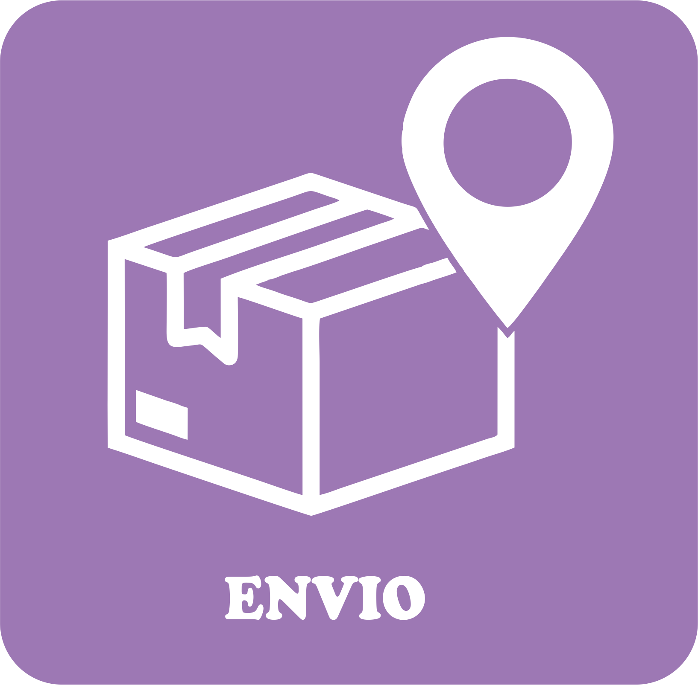
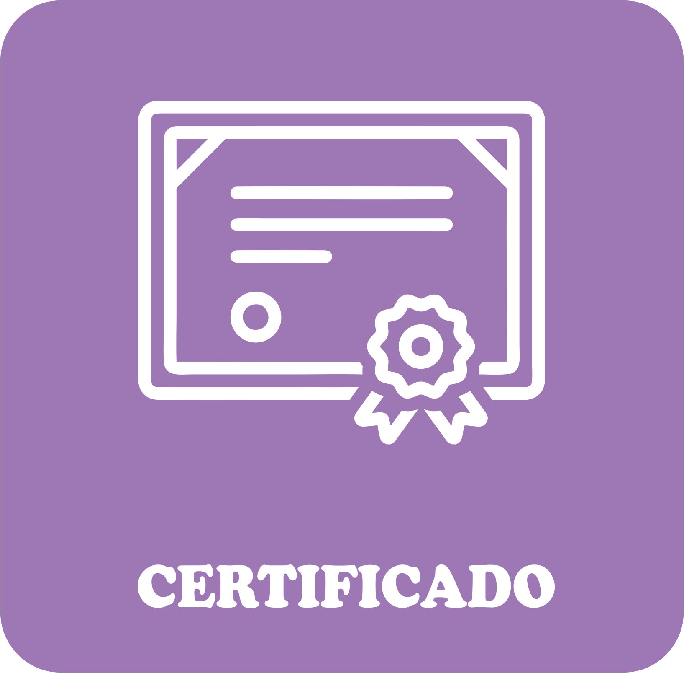

Escolha uma categoria para encontrar a ajuda que você precisa.


×
Requisitos para doar seu cabelo
1 - Porque o mínimo é 20cm?
Porque na confecção de peruca perdemos quase 5 cm de cabelo no processo, sendo menor que isso não
conseguimos um comprimento suficiente para confeccionar as perucas.
2 - Posso eu mesmo cortar ou preciso ir a um cabelereiro?
Você mesmo pode cortar, não temos exigências sobre quem cortará, só pedimos que o cabelo venha bem
amarrado, com elástico e seco, lembrando que o cabelo tem que estar sem chapinha e sem escova.
3 - Meu cabelo é repicado vocês aceitam?
Sim, apenas pedimos que a menor parte do repicado não esteja muito abaixo dos 20cm.
4 - Vocês aceitam cabelos cacheados e afros? Como medir?
Aceitamos e precisamos muito. No caso dos cabelos cacheados e afros, de preferência, que tenha 15cm
seco e enrolado.
5 - Cabelo tem prazo de validade? Tenho um cabelo guardado há anos, posso enviar mesmo
assim?
Se ele estiver em boas condições (sem mofo, sem nós) nós aceitamos sim.
6 - Faço química no cabelo, é melhor doar antes ou depois de coloca-la?
Pedimos que nos mande antes de colocar a química, devido ao cheiro que fica no cabelo durante os
primeiros dias.
7 - Como exatamente tenho que pedir para o cabelereiro cortar meu cabelo?
É muito fácil! Se for ao cabeleireiro, avise-o que é para adoção.
O corte é o convencional, só precisamos que venha bem amarrado com um elástico.
Pode-se cortar em várias mechas ou num único rabo de cavalo.
Corte o cabelo, de preferência já seco ou espere secar.
O elástico precisa estar bem firme, para que o cabelo não solte.
8 - É necessário algum cuidado especial?
O cabelo precisa estar seco e amarrado. Pedimos que não faça trança nele.
Não é necessário colocá-lo em nenhum lugar especial, só precisamos que venha dentro de um saco
plástico.
9 - Preciso guardar o cabelo em algum tipo de saco plástico especial?
Não, qualquer saco serve, desde que o cabelo esteja 100% seco.
10 - Amarrei o cabelo, mas soltou, posso enviar mesmo assim?
Depende de como ele se espalhou. Se ficou muito espalhado, infelizmente não temos como utilizar.
×
ENVIO
1 - Me deram cabelos de pessoas desconhecidas, posso mandar todos
juntos?
Pode sim, só pedimos que envie em sacos plásticos separados.
2 - Posso enviar em envelope ou precisa ser caixa?
Nós não temos preferência sobre essa questão, mas às vezes os Correios têm regras próprias.
3 - Envio via PAC ou Sedex?
Nós não temos preferência, envie como for mais conveniente.
4 - Posso levar pessoalmente?
Pode sim, basta levar em um de nossos pontos de coletas, os endereços estão disponíveis na aba
Pontos de coletas em nosso site.
5 - Como saber se minha doação chegou?
Você pode consultar se a sua doação já consta em nosso banco através da busca pelos doadores aqui.
Basta digitar o CEP do remetente da doação. Caso não encontre, você pode realizar uma nova busca
através do CEP 00000-000. Importante: os certificados aparecem no site cerca de dois meses após a
data de envio da doação. Mas se ainda assim a sua doação não for encontrada, você pode entrar em
contato com o Cabelegria através do e-mail cabelegria@gmail.com, com o título Certificado não
encontrado, informando os seguintes dados do doador: nome completo, endereço e data aproximada do
envio da doação.
6 - Como confirmar a chegada do cabelo de uma forma rápida?
A forma mais rápida de confirmar a doação é através do código de rastreamento que os Correios
fornecem dentro da nota fiscal do envio. No próprio site dos Correios você pode saber onde está o
seu cabelo, mas você pode também verificar através da aba “doadores” existente no site, porem temos
um prazo de até um mês e meio para cadastrar as doações.
7 - Vocês reembolsam o custo de envio dos Correios?
Infelizmente não temos recursos financeiros suficientes para devolver este valor aos doadores.
×
CERTIFICADO
1 - O que é o Certificado?
O certificado é uma forma que encontramos de agradecer aos nossos doadores. Ele é digital e é
possível encontrá-lo na aba de doadores do nosso site, ao digitar o CEP do remetente. Depois do
RECEBIMENTO o certificado do doador deve aparecer no site dentro de um mês e meio.
2 - Como faço para gerar o meu certificado de doação?
Como forma de agradecimento, o Cabelegria disponibiliza em seu site um certificado digital de doação
cerca de dois meses após a sua doação ter sido enviada. Por isso, é importante que, antes de enviar,
você se certifique de que as informações no envelope estão legíveis – inclusive endereço e CEP. Caso
tenha mais de uma doação, identifique os cabelos com o nome de cada doador, para que todos encontrem
seus certificados.
Caso já tenha feito a sua doação e queira encontrar o seu certificado, clique aqui.
3 - Meu nome está errado no certificado. Como corrigir?
Você pode solicitar a correção do seu nome no certificado através do e-mailcabelegria@gmail.com, com
o título Correção de nome – Certificado, informando o seu nome completo de forma correta, o nome que
encontrou no site, o endereço informado na doação e a data aproximada do envio da doação.
4 - Por que minha doação foi recusada?
Não recusamos doações, por favor, verifique se a sua doação foi mandada para o endereço correto.
A/C Cabelegria
Caixa Postal – 75207
São Paulo/SP
CEP. 02415-972
5 - Esqueci de colocar as informações no remetente, posso receber o certificado?
Infelizmente não será possível, pois cadastramos o remetente ou alguma informação que venha dentro
da encomenda.
×
CONFECÇÃO DAS PERUCAS
1 - Como saber se meu cabelo realmente será utilizado para a confecção de
perucas?
Nós divulgamos todas as entregas feitas, basta conferir em nossas redes sociais. Fazemos entregas
dentro de todo o Brasil.
2 - Quanto custa, em média, a produção de uma peruca?
Custa, em média, 100 (cem) reais.
3 - Para quais instituições vocês mandam os cabelos?
Atendemos pacientes de diversos hospitais como GRAACC, ITACI, TUUCCA, Hospital Darcy Vargas, entre
outros. Tambem enviamos perucas diretamente para pacientes, mediante a comprovação documental, via
Correios para qualquer lugar do Brasil. Possuímos 4 Bancos de Perucas, você pode conhecer um pouco
sobre eles na aba “Banco de Perucas”. Possuímos também um banco de perucas móvel onde levamos para
diversos hospitais do Brasil.
4 - Posso conhecer a ONG?
As visitas podem ser realizadas em nossos Bancos de Perucas, basta checar o dia e horário de
funcionamento na aba “Banco de Perucas”
5 - Posso conhecer o paciente que receberá a peruca com o meu cabelo?
Infelizmente essa possibilidade não existe, pois precisamos de 5 a 7 cabelos para preencher uma
peruca e não temos como fazer o controle de qual peruca tem o cabelo de quem.